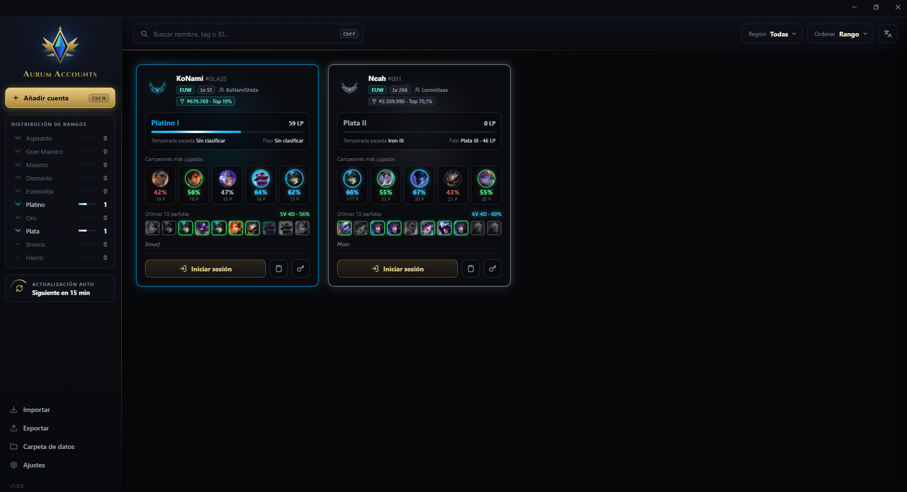

Gestor de cuentas de League of Legends · Windows
Todas tus cuentas, a un clic.
Guarda tus cuentas, mira sus rangos de un vistazo e inicia sesión automáticamente. Gratis, de código abierto y con tus contraseñas cifradas en tu propio equipo.

Todo lo que necesitas, nada que sobre
Pensado para quien juega con varias cuentas y quiere dejar de apuntar contraseñas.
Inicio de sesión con un clic
Abre el Riot Client y escribe tus credenciales por ti. Si quieres, también abre el juego al terminar.
Rangos y estadísticas
Solo/Duo y Flex con sus LP, campeones más jugados y últimas partidas, obtenidos de OP.GG.
Se actualiza solo
Los rangos se refrescan automáticamente cada 15 minutos (configurable) y la propia app te avisa de las nuevas versiones.
Muchas cuentas, sin líos
Busca, filtra por región y ordena por rango. Añade cuentas en bloque, e importa y exporta tu lista.
10 idiomas
Español, inglés, francés, alemán, portugués, ruso, turco, chino, japonés y coreano.
Tus datos, a salvo
Copia de seguridad automática de tu lista de cuentas y recuperación si el archivo llegara a dañarse.
Tus contraseñas son solo tuyas
Así funciona por dentro, sin letra pequeña.
- Las contraseñas se guardan cifradas con la protección de datos de Windows: solo tu usuario, en tu equipo, puede descifrarlas.
- Todo se guarda en local. La app no envía tus credenciales a ningún servidor: solo las escribe en el Riot Client de tu PC.
- Código abierto: puedes revisar todo en GitHub y compilarlo tú mismo.
- Solo se conecta a OP.GG, Riot Data Dragon, Community Dragon y GitHub, y a la API local del Riot Client para abrir el juego.
Descarga Aurum Accounts
Gratis. Elige cómo quieres usarlo.
Instalador
Se instala como cualquier programa y se actualiza solo cuando sale una versión nueva.
Descargar instaladorPortable
Un solo archivo que ejecutas donde quieras. Las actualizaciones hay que descargarlas a mano (la app te avisa).
Descargar portablePreguntas frecuentes
Lo que más nos preguntan antes de descargarla.
¿Es seguro?
El código es abierto, así que cualquiera puede revisarlo en GitHub. Aun así, como con cualquier programa, descárgalo solo desde esta página o desde su repositorio oficial, nunca de otros sitios.
¿Pueden sancionar mi cuenta por usarlo?
Aurum Accounts no modifica el juego ni lee su memoria: solo escribe tu usuario y contraseña en el Riot Client oficial, igual que harías tú. Aun así es una herramienta no oficial y no podemos darte garantías sobre las normas de Riot. Úsala bajo tu responsabilidad.
¿Dónde se guardan mis cuentas?
En tu propio equipo, en la carpeta de datos de la aplicación. Puedes abrirla desde Ajustes → Abrir carpeta de datos. Nunca se suben a ningún servidor.
¿Cómo se actualiza?
Con el instalador, la app comprueba sola si hay una versión nueva, te avisa y la instala cuando tú quieras. Con la versión portable te avisa y te lleva a la descarga.
¿Funciona en Mac o Linux?
No, de momento solo en Windows 10 y 11 de 64 bits.
¿Está afiliado a Riot Games o a OP.GG?
No. Es un proyecto de la comunidad y no está respaldado por Riot Games ni por OP.GG.